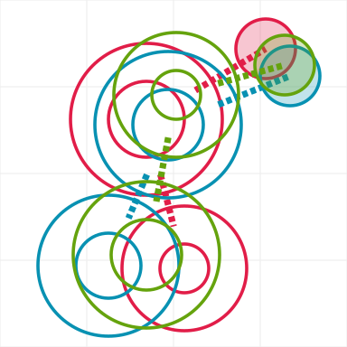

All four are the same idea: a two-storey lowercase g drawn as a graph. The top bowl and the bottom loop are ring nodes joined by an edge, and the ear is an edge out to an amber node. They differ only in sizes and positions. Each strip: 512 (shown at 192), 128, 32, 16, then 16 and 32 magnified 4x and 2x so the pixels show. Rows: light, dark, one color. Colors are indigo and amber in every column so only the shape changes.
| Round 1 A, graph-g | Round 2 2A, zigzag | Round 2 2G, classic | Best of (proposal) | What it does to the reading | |
|---|---|---|---|---|---|
| Bowl (top ring), outer width | 28 | 27 | 23 | 26 | The bowl is the letter's main body. Largest in round 1 A; smallest in 2G, which is why 2G reads top-light. |
| Bowl hole | 14 | 13 | 9 | 12 | The hole has to stay open at 16 px. 2G's 9 units is 2.25 px at 16 px and starts to fill in. |
| Loop (bottom ring), outer width | 23 | 26 | 27 | 26 | Round 1 A has a small loop (a tail); 2A matches it to the bowl; 2G makes it bigger than the bowl. |
| Loop hole | 9 | 12 | 13 | 12 | Round 1 A's 9-unit loop hole shrinks to a single pixel at 16 px, so the tail reads as a dot. |
| Bowl to loop size ratio | 1.31 | 1.05 | 0.8 | 1 | Above 1: a g with a tail. About 1: two equal nodes, the most graph-like. Below 1: the bottom-heavy shape that reads as an 8. |
| Loop offset left (-) or right (+) of the bowl | 7 | -11 | -5.5 | -8 | The stem. 2A swings the loop far left (the zigzag), so it can never be read as an 8. Round 1 A swings right, like a cursive tail. 2G is nearly stacked, hence the 8. |
| Stem tilt from vertical, degrees | 14.28 | -22.93 | -10.56 | -14.93 | The angle of the bowl-to-loop edge. Near 0 stacks the rings into an 8. |
| Bowl-to-loop edge, visible length | 2.88 | 1.73 | 5.01 | 5.05 | How much edge shows between the rings. 2A shows under 2 units: at 16 px the rings touch and the edge vanishes, the same flaw the owner saw in 2C. 2G shows the most. |
| Ear edge, visible length | 6.05 | 5.23 | 3.74 | 4.96 | The edge to the amber node. Round 1 A's is the longest and so the clearest 'this is an edge'. |
| Ear angle above horizontal, degrees | 30.58 | 21.8 | 15.38 | 23.36 | Round 1 A points the ear up toward the corner like a real g's ear; 2G's is almost flat and reads as a flag. |
| Amber node diameter | 11 | 11 | 11 | 12 | Same 11 in the three existing marks. |
| Ear edge thickness | 5 | 6 | 6 | 6 | |
| Bounding box x, y | 13-54.5 x 3.5-61 | 7-59 x 8.5-62 | 13.5-58 x 6-60.5 | 8-57 x 3-61.5 | How the mark sits in its square. |
